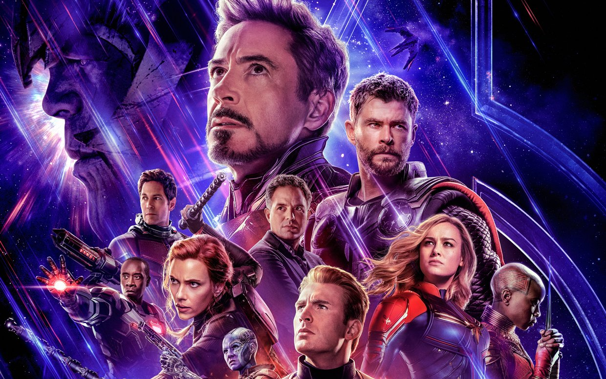

Elon Musk: 5 curiosidades sobre o bilionário da Tesla
Elon Musk é um dos empreendedores mais inovadores e aparentemente mirabolantes do mundo. Suas iniciativas incluem projetos de energia limpa, inovações em automóveis, inteligência artificial, neurotecnologia e até viagens aeroespaciais. Atualmente, um tweet seu pode causar um terremoto no mercado de criptomoedas.
No entanto, a história de Musk nem sempre foi de sucesso. Muitas de suas ideias já foram consideradas péssimas e renderam demissões de empresas que ele mesmo fundou. O empreendedor já amargou prejuízo durante anos e esteve à beira da falência. Na tentativa de se reerguer, tentou até mesmo vender a Tesla e a SpaceX para Apple, mas teve a proposta rejeitada.
Confira, abaixo, cinco curiosidades sobre a trajetória de Elon Musk.

Curiosidades
Qual é a ordem cronológica dos filmes e séries da Marvel?

- 1. Onde Elon Musk estudou?
- 2. Como Elon Musk ficou rico?
- 3. Qual a função de Elon Musk na Tesla?
- 4. Por que Musk quer ir para Marte?
- 5. Elon Musk é o homem mais rico do mundo?

Para fugir de serviço militar obrigatório na África do Sul, que tinha como principal função impor o apartheid, Musk fugiu aos 17 anos para o Canadá e se matriculou na Universidade de Queens. No entanto, dois anos depois se transferiu para a Universidade da Pensilvânia, onde se formou em Física e Economia.
Com 24 anos, chegou a se matricular na Universidade de Stanford no doutorado em física aplicada e ciência dos materiais. Mas a experiência durou apenas dois dias. Musk estava mais interessado em apostar no mercado emergente de empresas na internet e nunca mais retomou sua vida acadêmica.
Musk sempre foi um empreendedor nato, talento que foi impulsionado pelas condições trazidas pela sua família. Durante sua graduação na Pensilvânia, Estados Unidos, comprou uma casa com outro colega para alugar para outros estudantes. Ao abandonar o doutorado, juntou com seu irmão US$ 28 mil para fundar a Zip2, uma espécie de páginas amarelas para web com mapas.
Além de tentar uma vaga na Netscape, uma empresa de serviços de computadores, e ser rejeitado, Musk foi expulso de seu próprio negócio. A Zip2 foi vendida por US$ 341 milhões para Compaq, o que rendeu US$ 22 milhões para o sul-africano.
Com US$ 10 milhões obtidos na venda, o empresário investiu na X.com, um banco online. Um ano depois, a companhia se fundiu com a startup financeira Confinity, de Peter Thiel, para formar a PayPal, que já foi considerada uma das 10 piores ideias do mundo naquela época. Durante uma viagem de lua de mel, Musk foi destituído da posição de CEO da empresa, mas ainda conseguiu angariar fundos com o negócio como membro do conselho.
Quando a PayPal foi vendida para o eBay por US$ 1,5 bilhão, Musk embolsou cerca de US$ 180 milhões. Parte desse dinheiro, US$ 100 milhões, foi investido na fundação da SpaceX, com o objetivo de baratear voos espaciais. A companhia espacial chegou a fazer contratos de US$ 3 bilhões com a NASA para operações no espaço.
No entanto, a grande virada na vida financeira do empresário começou um investimento de US$ 70 milhões na Tesla Motors, empresa fundada em 2003 pelos engenheiros Martin Eberhard e Marc Tarpenning. Sob seu comando, a companhia se tornou a maior montadora de automóveis do mundo e também o principal ativo financeiro do empresário.
Elon Musk foi o primeiro grande investidor da Tesla e se tornou logo o CEO da companhia em 2004. A partir de 2021, o seu título foi mudado para “Rei da Tecnologia” oficialmente em um documento encaminhado para a Comissão de Valores Mobiliários dos Estados Unidos.
Na prática, além da administração geral da empresa, Musk lidera o desenvolvimento de design de produtos, engenharia e fabricação global de veículos elétricos, baterias e produtos de energia solar. Ou seja, é o “rosto” e a “alma” da Tesla atualmente.

Desde a fundação da SpaceX, o principal objetivo de Elon Musk é colonizar Marte, inspirado pelo cientista Nikola Tesla. Por volta de 1900, o inventor acreditava ter captado sinais vindos de um planeta vizinho.
O empresário tem a confiança de que uma viagem até Marte pode acontecer em 2026 e, no pior dos cenários, em 2031. Ele pretende construir 1.000 foguetes Starship para realizar decolagens a cada três dias e levar um milhão de pessoas ao planeta vermelho até 2050.
A primeira vez que Elon Musk apareceu na lista de homens mais ricos do mundo foi em 2012, quando tinha um patrimônio líquido de “apenas” US$ 2 bilhões. Quase uma década depois, o bilionário acumulou uma fortuna de US$ 288 bilhões e chegou ao topo do ranking da riqueza mundial, segundo a Forbes.
Durante a pandemia, o empresário viu sua fortuna crescer 10 vezes, de acordo com relatório da Oxfam. Principal acionista da Tesla, Musk vê o saldo da sua conta bancária flutuar acompanhando a variação do valor da empresa na bolsa de valores. Em outubro de 2021, uma valorização de 13% nas ações da empresa fez o empresário ficar US$ 41,7 bilhões mais rico.